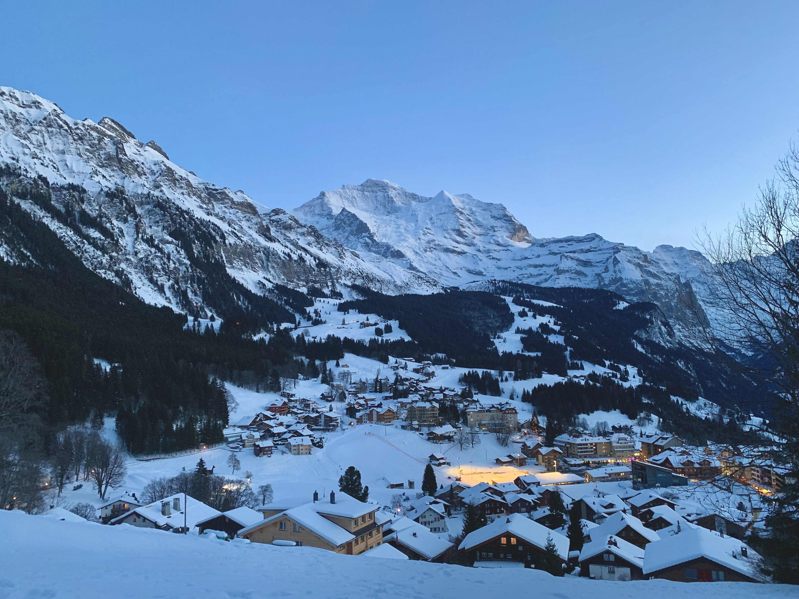

About Me
I am a dedicated biologist specializing in marine science, currently working as a Postdoctoral Associate in the department of Evolution, Ecology, and Behavior at the University of Illinois Urbana-Champaign under the guidance of Dr. Chris Cheng. My research focuses on marine genomics, environmental DNA, and the evolution of Antarctic fish using bioinformatics.
I believe in lifelong learning, both inside and outside the lab. To stay energized, I love biking (a favorite routine from my days in Seoul), hitting the gym, and I have recently taken up tennis. I love traveling and learning new cultures too. I also enjoy spending time with my friends or unwinding with my Nintendo Switch.
One value that I place great importance on is maintaining a positive mindset and trusting in myself. I believe in steadfastly pursuing my own journey rather than comparing my progress to others.


Photos taken during my travels. Image Copyright © JK
Education and Professional Experience
* Professional Experience
* Education
Teaching and Mentoring Experience
Project : Comparative analysis of antifreeze gene families in two Antarctic eelpouts
Student later transferred to Univ. of Chicago in Fall 2025
Integrative Biology 271, Organismal Biology : Phylogenetic Methods
Lecture : Flavor biotechnology
Project : Transcriptome analysis of Sargassum horneri using Trinity
Supervised 2 graduate students from Sangji Univ.
Lecture : Fundamentals of Biotechnology and Laboratory
Project : Genome assembly and annotation of microorganisms
Supervised 4 undergraduate students
Project : Novel microbial screening and E. coli transformation
Supervised 4 undergraduate students
Project : Antarctic fish species identification and genome assembly & annotation of lichen
Supervised 2 undergraduate students
Lecture : Flavor biotechnology
Project : Lichen field sampling (Suncheon, S. Korea) and DNA isolation
Supervised 3 undergraduate students
Project : Microbial screening from environmental samples
Supervised 1 undergraduate students
Presentations
Presentation titles and abbreviations are listed in my CV
Professional Development and Awards
Microbial profiling workshop using DADA2
High Performance Computing (HPC) on Biocluster
Chromosome-level genome assembly of Patagonian moray cod (Muraenolepis orangiensis) and immune deficiency of MHC class II
Cell Stress and Chaperones, Vol. 29, Issue 1 https://doi.org/10.1016/j.cstres.2024.01.004
NGS data variant analysis basic course
Reconstruction of the full-length transcriptome analysis using PacBio Iso-Seq provides transcript variants in the immune system of blood clam, Tegillarca granosa
Specialist in Genome Informatics Basic Course II
Professional Service
27th Annual Graduate Student Symposium, Poster and talk session
Poster session: Cells and Molecules
Publication (2026-2023)
Click on a title to view the paper (** See my CV for a complete list of publications)
* First Author
- 1. Chromosomal genome assemblies of Antarctic Notothenia coriiceps and temperate relative Paranotothenia angustata 2026 Under Review, BioRxiv
- 2. In silico structural analysis and biochemical characterization of a novel PETase from Antarctic Streptomyces sp. 2025 Computational and Structural Biotechnology Journal
- 3. Genome survey and microsatellite marker development in the Antarctic Eaton’s skate, Bathyraja eatonii (Rajiformes, Arhynchobatidae) 2025 Regional Studies in Marine Science
- 4. Genome-wide identification of Tegillarca granosa ATP-binding cassette (ABC) transporter family related to arsenic toxicity 2025 Genomics
- 5. Chromosome-level genome assembly and annotation of the Patagonian toothfish Dissostichus eleginoides 2024 Scientific Data
- 6. High-quality chromosome-level genome assembly of female Artemia franciscana reveals sex chromosome and Hox gene organization 2024 Heliyon
- 7. Expansion of the HSP70 gene family in Tegillarca granosa and expression profiles in response to zinc toxicity 2024 Cell Stress and Chaperones
- 8. An Antarctic lichen isolate (Cladonia borealis) genome reveals potential adaptation to extreme environments 2024 Scientific Reports
- 9. Chromosome-level genome assembly and annotation of the Antarctica whitefin plunderfish Pogonophryne albipinna 2023 Scientific Data
- 10. Application of Environmental DNA (eDNA) for Marine Biodiversity Analysis 2023 Journal of Marine Life Science
- 11. Chromosome-level genome assembly of Patagonian moray cod (Muraenolepis orangiensis) and immune deficiency of major histocompatibility complex (MHC) class II 2023 Frontiers in Marine Science
- 12. Metagenomic Analysis of Antarctic Penguins Gut Microbial Dynamics by using Fecal DNA of Adélie (Pygoscelis adeliae) and Emperor (Aptenodytes forsteri) Penguins in Ross Sea, Antarctica 2023 Journal of Marine Life Science
Curriculum Vitae
You can download my full CV below
Download Full CV